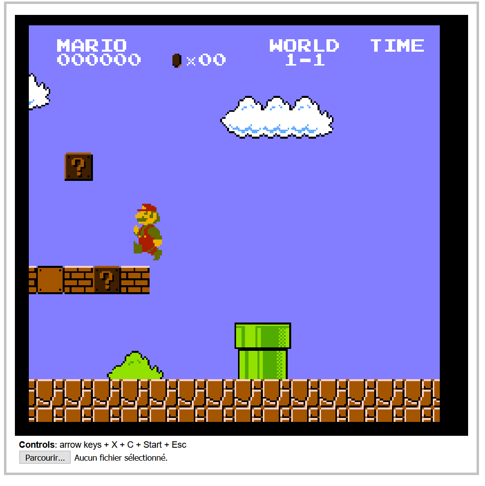

Golfing a NES emulator in JS
October 2020 - WIP
Introduction
Hello!
Today I'm going to tell you how I'm creating the world's smallest NES emulator in JS. It is based on this Twitter thread.
In the previous years, I've made many attempts at creating my onw NES emulator from scratch:
I wrote an emulation cheat-sheet and built a ROM decompiler and debugger...

but unfortunately, all the preparation and all the docs I could read (NESdev, NO$NES) weren't enough to boot a single game.
The actual CPU and graphics emulation were just too tricky.
So I decided to try a different approach: fork an existing (and functional) NES emulator in JS, and golf it down to just a few kilobytes.
After some research, I chose the most popular one, JSNES, which is already quite large:
- 5411 lines of code
- 191kb commented
- 99.92kb minified
- 21.29kb zipped
... and can't acually run without its huge UI (jsnes-web) made in React 😱:
- 1106 dependencies
- 304Mb of node_modules
- 1614 lines of code
- 51.4kb commented
- 349kb built and minified
- 99.5kb zipped
My goal will be to figure out what all these lines of code do exactly, and try to replicate that with the smallest possible amount of code.
Also, an emulator is fractally complex. You can add accuracy and features as much as you want, it'll never really end...
so I will aim for a MVP (minimum viable product) with the best support possible for commercial games, and under 5kb zipped.
Let's go on a journey full of traps, surprises and arbitrary choices!
The UI

Let's start with the elephant in the room: the UI. What does jsnes-web do to weigh almost 100kb? Not so many things actually:
- Initialize a 2D canvas and an AudioContext, with their framebuffers and audio buffers
- Start the JSNES emulator
- Load a ROM file and hand it to JSNES's ROM manager
- Render the frames and play the sound samples returned by the emulator, 60 times per second
- Listen to keyboard inputs and hand them to JSNES's control manager
So I created a standalone HTML page that did all that in Vanilla JavaScript, while respecting JSNES's API:
HTML setup (3 lines)
<canvas id=canvas width=256 height=240 style="background: #000"></canvas>
<b>Controls</b>: arrow keys + X + C + Start + Esc
<input type=file id=file>
Canvas setup (106 lines => 5)
var ctx = canvas.getContext("2d");
var imageData = ctx.getImageData(0,0,256,240);
var frameBuffer = new ArrayBuffer(imageData.data.length);
var frameBuffer8 = new Uint8ClampedArray(frameBuffer);
var frameBuffer32 = new Uint32Array(frameBuffer);
Audio setup (236 lines => 15)
var audio = new AudioContext();
var audioprocessor = audio.createScriptProcessor(512, 0, 2);
audioprocessor.connect(audio.destination);
// When the Audio processor requests new samples to play
audioprocessor.onaudioprocess = audioEvent => {
// Ensure that we've buffered enough samples
if(leftSamples.length > currentSample + 512){
for(var i = 0; i < 512; i++){
// Output (play) the buffers in stereo
audioEvent.outputBuffer.getChannelData(0)[i] = leftSamples[currentSample];
audioEvent.outputBuffer.getChannelData(1)[i] = rightSamples[currentSample];
currentSample++;
}
}
}
var leftSamples = [];
var rightSamples = [];
var currentSample = 0;
Load rom, start emulator, display new frame / play new sound samples at 60fps (417 lines => 26)
file.onchange = () => {
var fileReader = new FileReader();
fileReader.readAsBinaryString(file.files[0]);
fileReader.onload = () => {
var nes = new jsnes.NES({
// Display each new frame on the canvas
onFrame: function(frameBuffer){
var i = 0;
for(var y = 0; y < 256; ++y){
for(var x = 0; x < 240; ++x){
i = y * 256 + x;
frameBuffer32[i] = 0xff000000 | frameBuffer[i];
}
}
imageData.data.set(frameBuffer8);
ctx.putImageData(imageData, 0, 0);
},
// Add new audio samples to the Audio buffers
onAudioSample: function(left, right){
leftSamples.push(left);
rightSamples.push(right);
},
// Pass the browser's sample rate to the emulator
sampleRate: 44100,
});
// Send ROM to emulator
nes.loadROM(fileReader.result);
// 60 fps loop
setInterval(nes.frame, 16);
}
}
Controller (453 lines => 17)
onkeydown = onkeyup = e => {
nes[e.type == "keyup" ? "buttonUp" : "buttonDown"](
1,
jsnes.Controller["BUTTON_" +
{
37: "LEFT",
38: "UP",
39: "RIGHT",
40: "DOWN",
88: "A", // X
67: "B", // C
27: "SELECT",
13: "START"
}[e.keyCode]
]
)
}
The original jsnes-web also features a game list and supports USB gamepads, but I don't.
Anyway, when all my code is put together, it's as small as 1.17kb minified and 878b zipped.
<canvas id=canvas width=256 height=240 style="background: #000"></canvas>
<p><input type=file id=file>
<p><b>Controls</b>: arrow keys + A + B + Start + Esc
<script src="https://unpkg.com/jsnes/dist/jsnes.min.js"></script>
<script>e=canvas.getContext("2d"),o=e.getImageData(0,0,256,240),n=new ArrayBuffer(o.data.length),t=new Uint8ClampedArray(n),r=new Uint32Array(n),l=new AudioContext,s=l.createScriptProcessor(512,0,2);s.connect(l.destination),s.onaudioprocess=e=>{if(a.length>C+512)for(var o=0;o<512;o++)e.outputBuffer.getChannelData(0)[o]=a[C],e.outputBuffer.getChannelData(1)[o]=T[C],C++};var a=[],T=[],C=0;file.onchange=()=>{var n=new FileReader;n.readAsBinaryString(file.files[0]),n.onload=()=>{file.remove();var l=new jsnes.NES({onFrame:function(n){for(var l=0,s=0;s<256;++s)for(var a=0;a<240;++a)r[l=256*s+a]=4278190080|n[l];o.data.set(t),e.putImageData(o,0,0)},onAudioSample:function(e,o){a.push(e),T.push(o)},sampleRate:44100});l.loadROM(n.result),setInterval(l.frame,16),onkeydown=onkeyup=n=>{l[n.type[5]?"buttonDown":"buttonUp"](1,jsnes.Controller["BUTTON_"+{37:"LEFT",38:"UP",39:"RIGHT",40:"DOWN",88:"A",67:"B",27:"SELECT",13:"START"}[n.keyCode]])}}}</script>In other words, 116 times smaller than the original, and fully compatible with JSNES.
(A lot of that size is actually used to respect JSNES's API, so it'll be even less at the end of my project.)
Here's my fork of jsnes-web: Github repo / Demo.
The author of JSNES found it neat!
The emulator!
I) The big picture
I've drawn an overview of all the elements that must be handled by a NES emulator:

Of course, a million details are not covered, that's what we'll see in the following parts.
II) Golfing the ROM loader
There's one major ROM format that dominates NES emulation, called iNes 1.0 (".nes" files).
Unfortunately, it's not very well designed, nor well used by the people who dump and share games.
But to summarize, a 16-byte header contains information about the cartridge:
- Number of 16kb PRG-ROM banks (game code).
- Number of 4kb CHR-ROM banks (graphics).
- Presence of a 8kb PRG-RAM bank (save slot).
- Nametable mirroring (background layout, allowing horizontal, vertical or bidirectional scrolling).
- Mapper number (0-255). Higher mapper numbers require other rom formats like iNes 2.0.
- Presence of a 512b "trainer" ROM bank containing instructions specific to certain mappers.
- Presence of extra ROM banks specific to arcade games.
- The TV system (NTSC or PAL) is sadly not reliable in this file format, so it must be found elsewhere (ROM database or user input).
...then the ROM contains dumps (copies) of the trainer (if any) and all the PRG-ROM banks and CHR-ROM banks.
For now, let's focus on the simplest Mapper "Mapper 0", used by major games like DK and SMB.
These games fit all their code in less than 32kb and all their graphics in less than 8kb, so no bank swaps are necessary.
In JSNES, the ROM parsing and Mapper 0 handling represents:
- 697 lines of code (in rom.js, mappers.js and tile.js)
- 17.6kb commented
- 5.3kb minified
- 1.4kb zipped
After rewriting it (and fixing it), my version is down to:
- 61 lines of code
- 8.4kb commented
- 819b minified
- 459b zipped
Commented
// ROM manager
// ===========
ROM = {
header: [],
mapper: 0,
mirroring: 0,
trainer: 0,
prg_rom_count: 0,
prg_rom: [],
chr_rom_count: 0,
chr_rom: [[],[]],
chr_rom_tiles: [[],[]],
// Load a ROM file:
load_rom: data => {
var i, j, k, l;
// Ensure file starts with chars "NES\x1a"
if(!data.indexOf("NES\x1a")){
// Parse ROM header (first 16 bytes)
for(i = 0; i < 16; i++){
ROM.header[i] = data.charCodeAt(i) & 0xff;
}
// Read number of 16Kib PRG-ROM banks (byte 4)
// The game's program is stored here
ROM.prg_rom_count = ROM.header[4];
// Read number of 8Kib CHR-ROM banks (byte 5)
// The game's graphics are stored here in the form of 8*8px, 4-color bitmaps
ROM.chr_rom_count = ROM.header[5] * 2;
// Check if the game adds 2 extra Kib to the PPU's VRAM (byte 6, bit 4)
// Otherwise, read mirroring layout (byte 6, bit 0)
// 0 => vertical mirroring (bit 0 on: the game can scroll horizontally)
// 1 => horizontal mirroring (bit 0 off: the game can scroll vertically)
// 2 => 4-screen nametable (bit 4 on: the game can scroll horizontally and vertically)
ROM.mirroring = (ROM.header[6] & 0b00001000) ? 2 : (ROM.header[6] & 0b0000001) ? 0 : 1;
// Check if the game has at least one battery-backed PRG-RAM bank (byte 6, bit 2)
// This is a persistent save slot that can be used to save the player's progress in a game
// If present, it can be accessed by the CPU at the addresses $6000-$7FFF
ROM.batteryRam = (ROM.header[6] & 0b0000010);
// Check if the game contains a 512b trainer (byte 6, bit 3)
// This bank contains subroutines executed by some Mappers
// If present, it can be accessed by the CPU at the addresses $7000-$71FF
ROM.trainer = (ROM.header[6] & 0b00000100);
// Mapper number (byte 6, bits 5-8 >> 4 + byte 7, bits 5-8)
ROM.mapper = (ROM.header[6] >> 4) + (ROM.header[7] & 0b11110000);
// Skip header
var offset = 16;
// Skip trainer, if it's present
if(ROM.trainer) offset += 512;
// Load the PRG-ROM banks
for(i = 0; i < ROM.prg_rom_count; i++){
ROM.prg_rom[i] = [];
for(j = 0; j < 16 * 1024; j++){
ROM.prg_rom[i][j] = data.charCodeAt(offset++) & 0xff;
}
}
// Load the CHR-ROM pages and prepare 256 tiles for each of them
var byte1;
var byte2;
var color;
for(i = 0; i < ROM.chr_rom_count; i++){
ROM.chr_rom[i] = [];
ROM.chr_rom_tiles[i] = [];
for(j = 0; j < 4 * 1024; j++){
ROM.chr_rom[i][j] = data.charCodeAt(offset++) & 0xff;
}
for(j = 0; j < 256; j++){
ROM.chr_rom_tiles[i][j] = { pixels: [] };
}
}
}
}
}
Minified
ROM={header:[],mapper:0,mirroring:0,trainer:0,prg_rom_count:0,prg_rom:[],chr_rom_count:0,chr_rom:[[],[]],chr_rom_tiles:[[],[]],load_rom:r=>{var o,e;if(!r.indexOf("NES")){for(o=0;o<16;o++)ROM.header[o]=255&r.charCodeAt(o);ROM.prg_rom_count=ROM.header[4],ROM.chr_rom_count=2*ROM.header[5],ROM.mirroring=8&ROM.header[6]?2:1&ROM.header[6]?0:1,PPU.nametable_mirroring=ROM.mirroring,ROM.batteryRam=2&ROM.header[6],ROM.trainer=4&ROM.header[6],ROM.mapper=(ROM.header[6]>>4)+(240&ROM.header[7]);var O=16;for(ROM.trainer&&(O+=512),o=0;o<ROM.prg_rom_count;o++)for(ROM.prg_rom[o]=[],e=0;e<16384;e++)ROM.prg_rom[o][e]=255&r.charCodeAt(O++);for(o=0;o<ROM.chr_rom_count;o++){for(ROM.chr_rom[o]=[],ROM.chr_rom_tiles[o]=[],e=0;e<4096;e++)ROM.chr_rom[o][e]=255&r.charCodeAt(O++);for(e=0;e<256;e++)ROM.chr_rom_tiles[o][e]={pixels:[]}}}}}TO BE CONTINUED